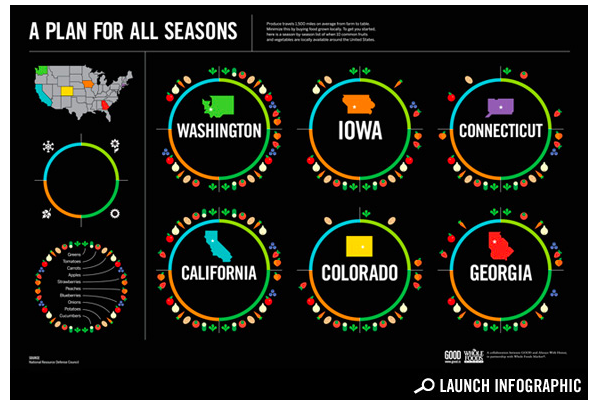

Thu, 19 Aug 2010 04:53:00 · infographic · USA · design · graphicdesign
infographic a visual guide of when fruits and

Infographic: A Visual Guide of When Fruits and Vegetables Are in Season.
Thu, 19 Aug 2010 04:53:00 · infographic · USA · design · graphicdesign

Infographic: A Visual Guide of When Fruits and Vegetables Are in Season.